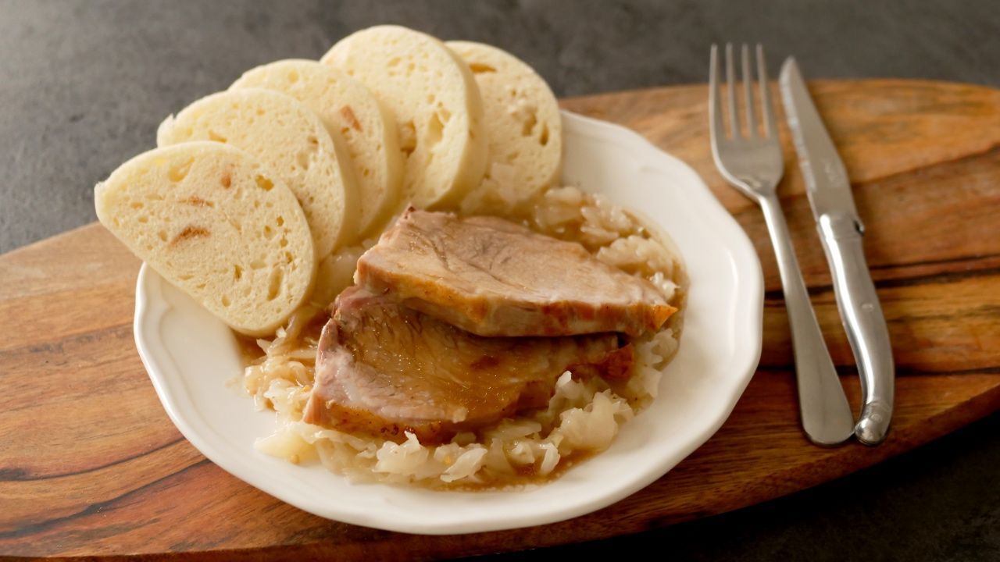

Vepřo knedlo zelo

Vepřo knedlo zelo s one of the most iconic Czech national
dishes 🇨🇿. The name literally breaks down into:
- Vepřo -> roasted pork
- Knedlo -> dumplings
- Zelo -> stewed cabbage
Ingredients:
- 1 kg pork shoulder or pork neck
- 2 onions, sliced
- 2–3 cloves garlic, crushed
- 2 tbsp lard or oil
- 1–2 tsp caraway seeds
- Salt and pepper
- About 250 ml water or light stock
- 500 g coarse flour
- 250 ml lukewarm milk
- 1 egg
- ½ cube fresh yeast
- 1 tsp sugar
- 1 tsp salt
- 2–3 slices of stale white bread, diced
- 500 g sauerkraut
- 1 onion, finely chopped
- 2 tbsp lard or oil
- 1 tbsp sugar
- 1 tbsp vinegar (optional, for balance)
- 200 ml water or stock
- 1 tbsp plain flour (for thickening)
- Salt, pepper, and caraway seeds
Steps:
-
Roast the pork. Rub pork with salt, pepper, and crushed garlic. Sprinkle
with caraway seeds. Place into a roasting dish with sliced onions and
lard/oil. Roast at 180 °C (350 °F) for about 90 minutes, basting
occasionally with water or stock until the meat is tender and golden.
Slice before serving.
-
For the dumplings: mix yeast, sugar, and a little lukewarm milk. Let it
rise for ~10 minutes. In a bowl, combine flour, salt, egg, the rest of
the milk, and the yeast mixture. Knead into smooth dough. Cover and let
rise for 45–60 minutes until doubled. Mix in bread cubes gently. Shape
into 2–3 rolls. Boil in salted water for 18–20 minutes, turning halfway.
Slice into rounds with a thread or serrated knife.
-
Preparing the cabbage: heat lard/oil in a pot, fry the onion until
golden. Add sauerkraut, sugar, and a bit of caraway. Stir well. Pour in
water/stock, cover, and simmer ~30 minutes. To thicken: stir in a spoon
of flour mixed with water, cook until smooth. Adjust seasoning with
salt, pepper, and vinegar to taste.